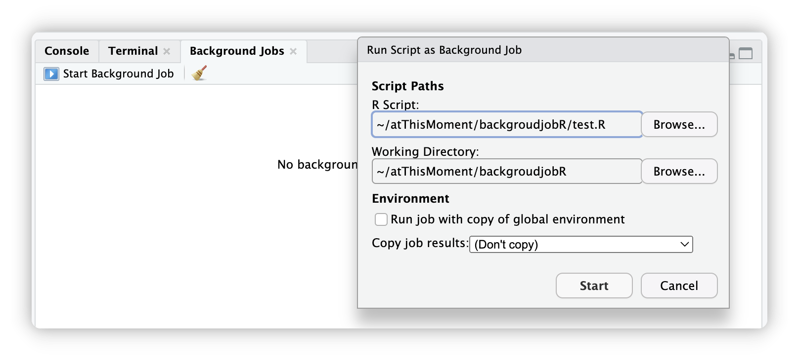

Overview
backgroudjobR is an R package that provides robust and flexible solutions for executing R scripts with comprehensive error handling, logging, and background processing capabilities. Whether you need to run scripts locally, in the background, or on remote servers, this package offers the tools to do so safely and efficiently. This package is powered by the powerful mirai package, for providing the background execution and automatic load balancing framework.
Key Features
- 🔒 Safe Execution: Run R scripts in isolated environments with comprehensive error handling
-
📝 Comprehensive Logging: Automatic logging of execution progress, errors, and memory usage (Please refer to
package website’sArticle->Log Examplefor details) - 💾 Auto-Recovery: Automatic environment saving when errors occur for debugging
-
🚀 Background Processing: Execute jobs in background using the powerful
miraiframework -
🖥️ Server-Friendly: Create standalone projects for execution with
screen,tmux, ornohup - 📊 Memory Monitoring: Built-in memory usage tracking and limits
-
⚡ Parallel Execution: Support for multiple background jobs with automatic load balancing (by
mirai)
Aim
Do you miss RStudio’s background jobs feature in terminal, VSCode or in the new developed IDE Positron? Though Positron have a multiple-console feature, but it is unstable in many cases (See their github issues).

So backgroudjobR is developed for solve this problem.
Installation
You can install the development version of backgroudjobR from GitHub:
# Install from GitHub
if (!require(remotes)) install.packages("remotes")
remotes::install_github("ZhimingYe/backgroudjobR")Get Start
See package website for details.
Use Cases
🔬 Research and Data Analysis
- Run long-running statistical analyses safely
- Process large datasets with memory monitoring
- Execute multiple analysis pipelines in parallel